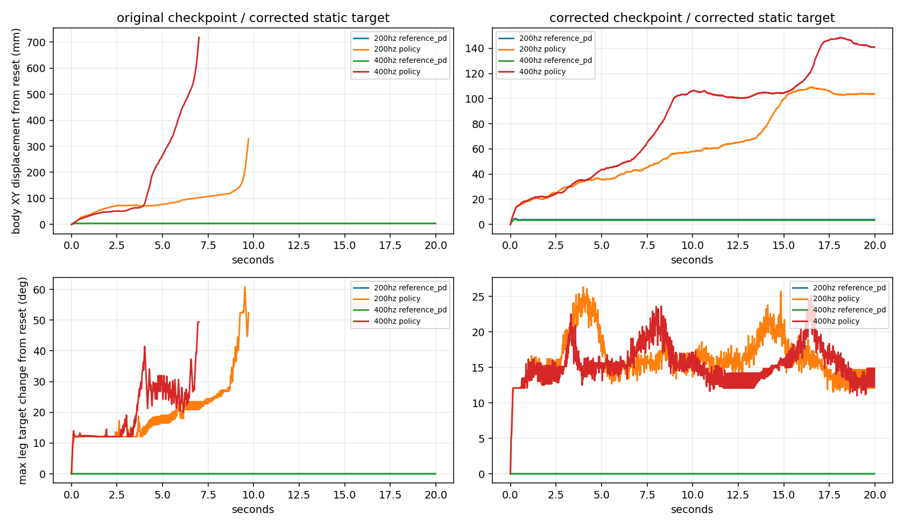

仅诊断，未启动训练。000016 第100帧生成静止目标；另设腿/腰/根固定、1秒后仅上肢表达的合成目标。原始人体接触时序未修改，合成双支撑标签仅用于受控测试。每组最多20秒，seed42、相同初态，无观测/初态噪声，μ=1、恢复系数0，控制50Hz；物理200/400Hz。禁用手部跟踪终止，保留高度/倾角终止。
Displacement excludes first second; early failures retained. Synthetic out-of-distribution test, not full-motion acceptance. Foot displacement is not measured contact-point slip.
The corrected pose is statically feasible under the tested PD/material settings. This does not establish that every corrected motion is dynamically feasible. Both learned policies still introduce unnecessary leg motion under a frozen target. Original-reference PD fails before one second; therefore reverting every IK change is not justified by this diagnostic.
At 200Hz, the corrected policy with the corrected static target lasts 20s but drifts 87.09mm after the first second. Left foot-roll target range is 30.42 degrees; left ankle-yaw 25.94 degrees. Its feet move 80.41/89.91mm net. With the same target, fixed PD holds for 20s with approximately 0.01mm body net drift. With upper-body expression, fixed PD holds 20s; the corrected policy terminates at 7.06s with 178.10mm net drift.
The horizontal path cost currently uses a 104.26mm scale and weight -0.5; the separate standing-drift term is disabled. A 10mm horizontal error incurs only about -0.00229 before timestep integration. This makes standing precision a plausible objective-calibration issue, but reward causality is not established by policy replay alone.
Next: retain both reference versions and both checkpoints; first isolate a standing-only tighter horizontal-error scale in the existing mixed standing/walking task, using reference-derived standing classification. Keep all human contact labels/timing, PD, friction, walking rewards and sampling unchanged. Use a short paired experiment and evaluate full held-out motions plus this static diagnostic before a long run. Avoid simultaneous friction, IK and reward changes; avoid hard-locking ankle degrees of freedom.
Limitations: one source pose, one seed, synthetic targets outside the normal training distribution, fixed material settings, no perturbations. PD holding is not a walking controller. Different early terminations imply unequal observation horizons; do not rank raw net displacement alone. The 400Hz evaluation changes physics resolution without retraining; it is a sensitivity check, not a fair comparison of policies trained at two frequencies. Fixed-world-camera frame sheets were visually inspected; exact trajectories are in the telemetry.
Contact diagnostics at 200Hz on the corrected static target: corrected policy has 12.45% known-stance samples with Fz below 1N; fixed PD has 0%. Threshold up-crossings are 12.4/13.7 per second, but sole geometry remains close to ground, so these are force unloading/chatter events, not confirmed airborne touchdowns. Minimum candidate-corner tangential speed averages 12.9mm/s versus 0.42mm/s for PD; this remains a geometric proxy, not a measured contact-patch velocity. See sole_metrics.json. Five-second windows in metrics.json exclude resets and retain max excursion as well as net displacement.
All 32 replays completed. At 400Hz physics (still 50Hz control), corrected-policy static drift rises from 87.09 to 123.92mm, while fixed PD remains approximately 0.01mm. Upper-expression policy terminates at 5.60s versus 7.06s at 200Hz. Increasing physics resolution alone does not resolve the observed behavior. No new policy training was started.

| 权重 | 物理频率 | 目标/控制器 | 持续秒 | 机身净位移mm | 终止 | 腿目标最大变化幅度° |
|---|---|---|---|---|---|---|
| corrected | 200hz | corrected_static_policy | 20.0 | 87.089 | {} | 30.42 |
| corrected | 200hz | corrected_static_reference_pd | 20.0 | 0.014 | {} | 0.0 |
| corrected | 200hz | corrected_upper_policy | 7.0600000000000005 | 178.105 | {'anchor_pos': 1} | 67.36 |
| corrected | 200hz | corrected_upper_reference_pd | 20.0 | 0.036 | {} | 0.0 |
| corrected | 200hz | original_static_policy | 20.0 | 20.368 | {} | 16.7 |
| corrected | 200hz | original_static_reference_pd | 0.96 | nan | {'anchor_pos': 1} | nan |
| corrected | 200hz | original_upper_policy | 6.74 | 133.128 | {'anchor_pos': 1} | 69.56 |
| corrected | 200hz | original_upper_reference_pd | 0.96 | nan | {'anchor_pos': 1} | nan |
| corrected | 400hz | corrected_static_policy | 20.0 | 123.918 | {} | 33.26 |
| corrected | 400hz | corrected_static_reference_pd | 20.0 | 0.009 | {} | 0.0 |
| corrected | 400hz | corrected_upper_policy | 5.6000000000000005 | 142.457 | {'anchor_pos': 1} | 76.84 |
| corrected | 400hz | corrected_upper_reference_pd | 20.0 | 0.036 | {} | 0.0 |
| corrected | 400hz | original_static_policy | 20.0 | 74.1 | {} | 23.51 |
| corrected | 400hz | original_static_reference_pd | 0.9400000000000001 | nan | {'anchor_pos': 1} | nan |
| corrected | 400hz | original_upper_policy | 4.64 | 198.12 | {'anchor_pos': 1} | 79.39 |
| corrected | 400hz | original_upper_reference_pd | 0.9400000000000001 | nan | {'anchor_pos': 1} | nan |
| original | 200hz | corrected_static_policy | 9.74 | 295.239 | {'anchor_pos': 1} | 63.39 |
| original | 200hz | corrected_static_reference_pd | 20.0 | 0.014 | {} | 0.0 |
| original | 200hz | corrected_upper_policy | 7.18 | 266.912 | {'anchor_pos': 1} | 63.55 |
| original | 200hz | corrected_upper_reference_pd | 20.0 | 0.036 | {} | 0.0 |
| original | 200hz | original_static_policy | 3.38 | 509.604 | {'anchor_pos': 1} | 50.27 |
| original | 200hz | original_static_reference_pd | 0.96 | nan | {'anchor_pos': 1} | nan |
| original | 200hz | original_upper_policy | 8.9 | 544.213 | {'anchor_ori': 1} | 69.45 |
| original | 200hz | original_upper_reference_pd | 0.96 | nan | {'anchor_pos': 1} | nan |
| original | 400hz | corrected_static_policy | 7.0200000000000005 | 685.424 | {'anchor_pos': 1, 'anchor_ori': 1} | 60.61 |
| original | 400hz | corrected_static_reference_pd | 20.0 | 0.009 | {} | 0.0 |
| original | 400hz | corrected_upper_policy | 9.120000000000001 | 738.159 | {'anchor_ori': 1} | 58.01 |
| original | 400hz | corrected_upper_reference_pd | 20.0 | 0.036 | {} | 0.0 |
| original | 400hz | original_static_policy | 5.58 | 626.443 | {'anchor_pos': 1, 'anchor_ori': 1} | 52.22 |
| original | 400hz | original_static_reference_pd | 0.9400000000000001 | nan | {'anchor_pos': 1} | nan |
| original | 400hz | original_upper_policy | 3.84 | 397.382 | {'anchor_pos': 1} | 61.9 |
| original | 400hz | original_upper_reference_pd | 0.9400000000000001 | nan | {'anchor_pos': 1} | nan |
Synthetic targets freeze the legs/root; not synchronized with source.